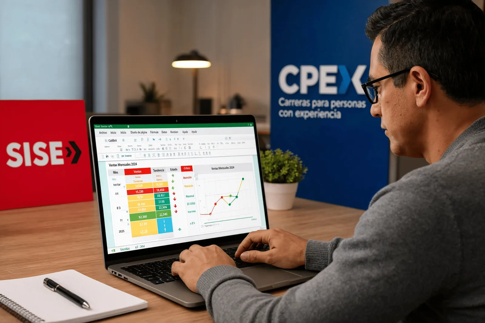
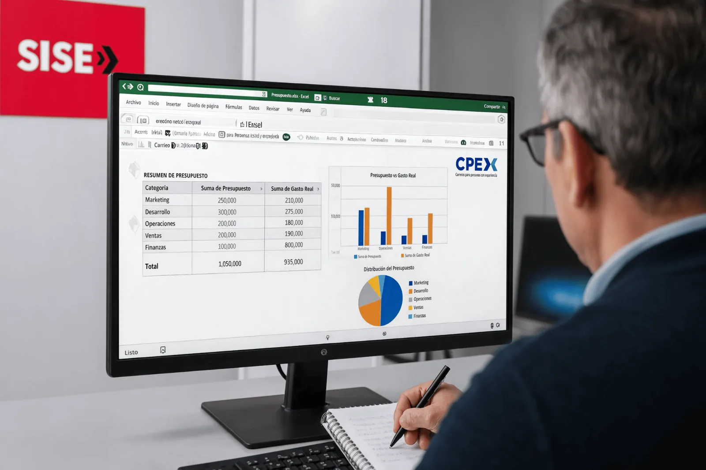

CASO GUÍA
Presupuesto mensual
Trabajarás con un escenario de presupuesto, igual que en la sesión: filtrar, identificar variaciones, resumir por categorías y fundamentar decisiones.
Taller de Informática para la Empleabilidad
Filtros, filtros avanzados, formato condicional, tablas dinámicas e interpretación de información.
Esta experiencia sigue la sesión de clase: organiza y depura información, aplica filtros y formato condicional, resume con tablas dinámicas y valida conclusiones con apoyo de IA.
Completa todas las actividades para desbloquear el diploma.
Encabezados, tipos de datos, duplicados y registros inconsistentes.
Localiza información relevante y aplica criterios específicos.
Visualiza valores críticos y tendencias con formato condicional.
Compara resultados con tablas dinámicas.
Formula mejoras sustentadas y contrástalas con IA.
Trabajarás con un escenario de presupuesto, igual que en la sesión: filtrar, identificar variaciones, resumir por categorías y fundamentar decisiones.
El análisis no termina en la tabla: una conclusión útil explica qué pasó, por qué importa y qué acción se recomienda.
Reduce una base de datos a los registros que responden una pregunta concreta, sin eliminar información.
Un filtro muestra temporalmente solo las filas que cumplen una condición. En un presupuesto, por ejemplo, puedes visualizar únicamente los gastos de Marketing, montos mayores a S/ 5,000 o registros de un mes determinado.
Ordenar y filtrar datos en Excel · Saber Programas.
Trabaja con rangos de criterios para combinar condiciones y extraer resultados específicos.
Es útil cuando necesitas criterios AND / OR más estructurados, extraer resultados a otra ubicación o filtrar registros únicos. La clave es construir correctamente el rango de criterios.
Filtros avanzados · Microsoft Excel a Todo Nivel.
Convierte números en señales visuales para detectar patrones, variaciones y valores críticos.
El formato condicional cambia la apariencia de una celda según reglas. No modifica el valor; facilita la lectura.

Formato condicional de básico a avanzado · EXCELeINFO.
Resume, agrupa y compara grandes volúmenes de datos sin alterar la base original.

En la sesión, la tabla dinámica se usa para resumir y comparar información del presupuesto antes de formular decisiones.
Coloca Área en Filas, Mes en Columnas y Gasto real en Valores. Luego filtra por centro de costo.
Tablas dinámicas explicadas paso a paso · Ciudadano 2.0.
Transforma los resultados en conclusiones verificables y usa la IA como apoyo, no como sustituto del criterio.
Revisa la coherencia entre datos, cálculos, tabla dinámica y conclusiones. Luego presenta tres decisiones de mejora y entrega la versión final.
Refuerza conceptos de Excel con tres retos. Todos validan respuestas en tiempo real.
Completa las 8 palabras. Las letras se validan mientras escribes.
Elige la mejor herramienta para cada situación.
Haz clic en la primera y luego en la última letra de cada palabra. Se permiten líneas horizontales, verticales y diagonales.
Responde las 10 preguntas. Verás qué respuestas son correctas e incorrectas y recibirás retroalimentación inmediata.
Se desbloquea al completar teoría, tips, los tres juegos y el cuestionario.
Tu diploma se habilitará cuando el progreso llegue al 100%.
Terminaste la ruta de análisis de datos en Excel 365.